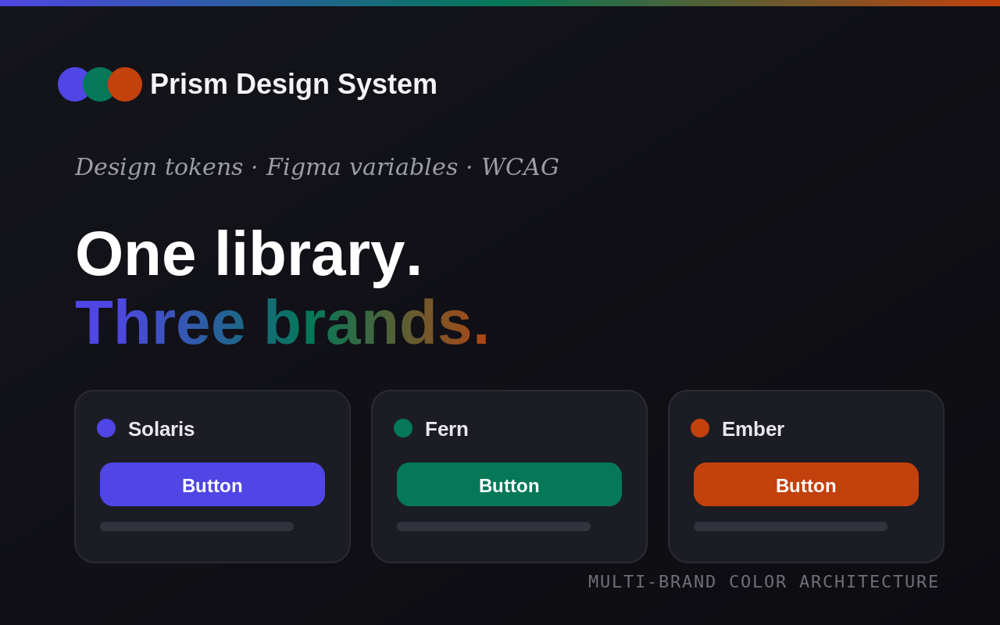
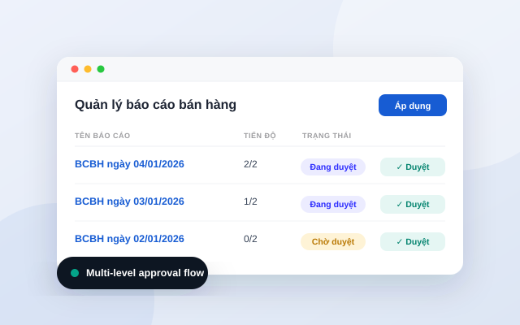
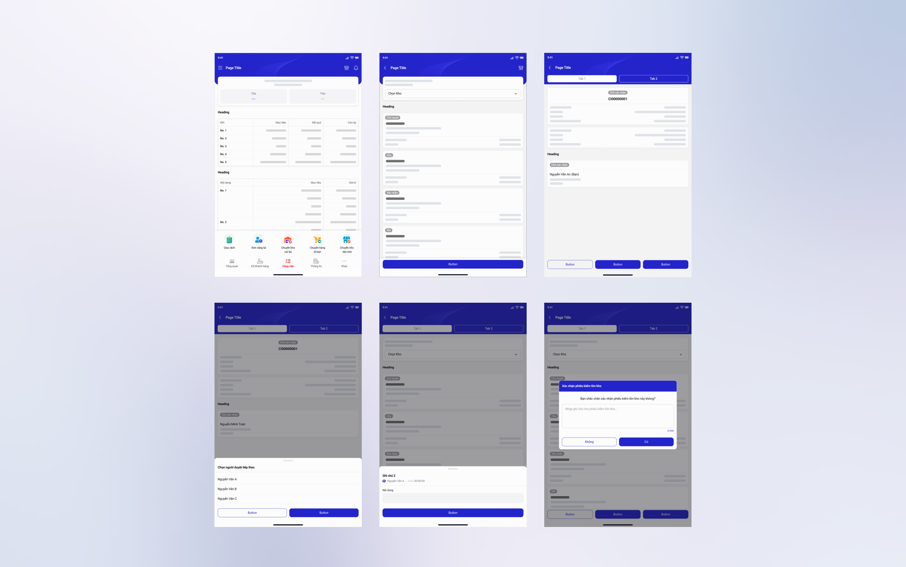
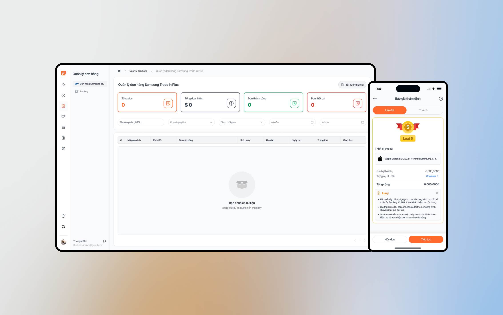
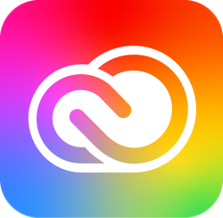
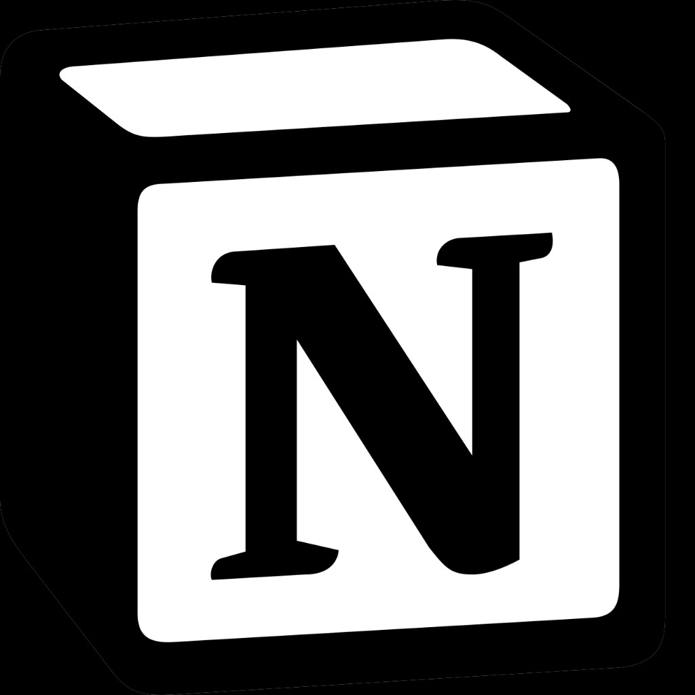

Prism — Multi-brand color architecture
A three-tier token system that themes one component library across three brands — no duplicated files, WCAG-audited. The page re-themes itself live.

A three-tier token system that themes one component library across three brands — no duplicated files, WCAG-audited. The page re-themes itself live.

Sequential multi-approver review for sales reports, with a graceful “offline approver” path so a report never gets stuck when someone is on leave.

End-to-end UX for distribution and sales operations — complex workflows, reporting, and multi-brand theming.

Customer-facing app and internal ERP across CRM, inventory, pricing, and admin — unified design system on web and mobile.
I'm a UI/UX Designer who turns messy enterprise problems into systems teams can actually ship.
Over 4+ years across SaaS, ERP, DMS and e-commerce, I've led design-system work end to end — from token architecture and component audits to research, prototyping, and developer handoff. I care about the decisions most people skip: the empty states, the defaults, the documentation that lets design scale beyond one person's head. I work fast, write a lot, and treat AI as a tool in the loop, never the one making the final call.

Adobe Creative Suite
Notion Cursor AI Antigravity CodeXSketch ugly, decide fast
Pretty mockups slow teams down. I'd rather make ten rough flows in a day and kill nine of them than spend a week protecting one beautiful idea.
Designers should write more
Component docs, decision logs, handoff notes, change rationales. Writing is how design scales beyond one person's head.
Tokens over taste
My personal taste isn't a design system. Tokens, rules, and audited components are what let a product feel coherent when ten people are touching it.
Defaults are decisions
The empty state, the placeholder copy, the unsorted list order. These aren't details. These are what users meet first, and they're almost always under-designed.
AI assists, humans decide.
I use generative tools daily. They're great at first drafts, terrible at final judgment. The interesting work is still mine to do.
Question the new shiny thing
Every quarter there's a tool, a trend, a methodology promising to change everything. Most don't. The work that ages well comes from fundamentals, not fashion.